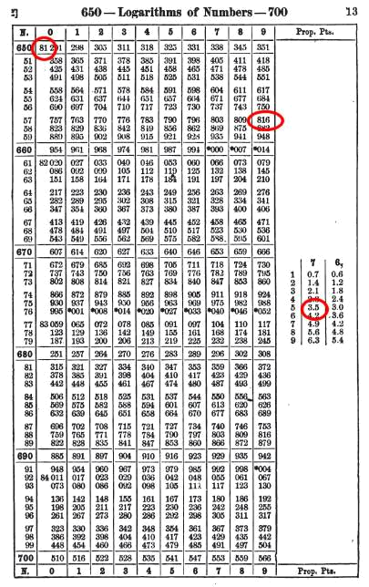

Pour recaler l'estime, on fait le point. En fonction de l'endroit où on est, des informations dont on dispose, les techniques de points sont différentes.
Un petit préambule : habitués qu'ils sont à obtenir un résultat en poussant des boutons, les usagers de l'électronique, des télécommandes et
autres zapettes sont en général effarés par la navigation astronomique, en particulier par les calculs qu'elle met en œuvre,
et peu s'en faut de devoir les rattraper au lasso, d'autant qu'ils s'imaginent souvent avoir entrepris ce qu'il y a de plus complexe
après avoir réussi à corriger un cap ou fait valoir une route. C'est incroyable, il faut réfléchir !
La quantité de calculs est de fait considérable (surtout pour quelqu'un qui ne sait pas compter sans calculette),
mais ces calculs sont simples, ce sont des additions et des soustractions (il y a bien une ou deux multiplications pour les interpolations,
mais rien de dramatique) puisqu'on utilise des tables de logarithmes, voire des tables dédiées à ce calcul.
Les calculs impliqués dans la navigation astronomique font intervenir des éphémérides
nautiques – ou astronomiques – qui fournissent plusieurs des paramètres nécessaires, concernant le ou les astres observés.
Parmi eux, les éphémérides permettent de connaître à chaque instant ce qu'on appelle la "position géographique instantanée" d'un astre, notée Pg.
La position géographique instantanée d'un astre est le point de la terre où l'astre est au zénith (à la verticale).
Il est unique à un instant donné pour un astre donné.
La latitude de ce point Pg s'appelle la déclinaison (et oui, encore une !) de l'astre.
Sa longitude s'appelle l'Angle Horaire à Greenwich, noté AHG, ou AHvo (Angle Horaire au vrai zéro).
Les calculs sont simples. Il va s'agir de quelques additions, et de quelques interpolations.
Point n'est besoin de tables trigonométriques ou logarithmiques. Papier et crayon suffisent.
Le point par hauteur méridienne exploite un cas particulier, qui est celui où l'astre et l'observateur sont sur le même méridien.
Il est midi au lieu de l'observateur (si tant est que l'astre observé soit le Soleil).
Les mots "midi" et "méridien" ont la même racine. Les méridionaux habitent dans le Midi.
Ce cas particulier se produit une fois par jour, et par astre.
Le passage au méridien d'un astre est son passage au point le plus haut de sa course dans le ciel.
Pour les autres astres que le soleil, on peut aussi exploiter leur passage à leur point le plus bas, on parle alors du passage à l'anti-méridien.
En fait, on peut aussi le faire avec le soleil, à condition de pouvoir voir le soleil à minuit.
Ce qui arrive en été, au-delà des cercles polaires.
Pour faciliter la lecture des figures qui suivent, on fait pivoter le méridien de l'astre dans le plan de la feuille.
L'observateur se trouve donc lui aussi sur ce méridien.
Latitude par hauteur méridienne, en théorie
On introduit ici une nouvelle notion, celle de distance zénithale, notée Dz, ou ζ (lettre grecque dzeta).
La distance zénithale est le complément de la hauteur, soit (90˚ - hauteur).
Si la latitude de l'astre (point Pg) et la latitude de l'observateur sont de signes différents, la distance zénithale est
égale à la somme de la latitude et de la déclinaison de l'astre.
Si la latitude de l'astre (point Pg) et la latitude de l'observateur sont de même signe, la latitude est
égale à la somme de la distance zénithale et de la déclinaison de l'astre.
Longitude par hauteur méridienne, en théorie
C'est à la fois très simple, et un peu compliqué. La théorie est très simple,
la pratique est – à la surprise générale - plus scabreuse.
Le principe repose sur le fait que la terre tourne de 360° sur elle-même en 24 heures.
Il existe donc une étroite corrélation entre la longitude et l'heure (il est possible que le terme "angle horaire" vous ait mis la puce à l'oreille).
Si un astre passe à un méridien à une heure donnée, il passera exactement une heure
plus tard à un méridien situé 15° plus à l'ouest.
Ce serait en fait exact si les astres qu'on observe étaient immobiles ; malheureusement, aucun d'eux ne l'est.
Mais 15° demeurent une approximation raisonnable. On le verra dans les exemples numériques commentés.
Les éphémérides nous permettent de savoir à quelle heure le soleil culmine à Greenwich.
Si on arrive à savoir à quelle heure le soleil culmine sur le méridien de l'observateur, alors il suffit d'exprimer
cette différence de temps en différence d'angle pour connaître sa longitude.
Ceci requiert cependant un chronomètre précis. En effet, 360° en 24 heures signifie 15° en une heure.
Soit 15' en une minute (de temps), ce qui représente 1' en quatre secondes (de temps).
Ainsi donc, une erreur de 4 secondes sur la montre correspond à une erreur d'une minute de longitude.
Comme on l'a déjà remarqué, ça va vite !
D'autre part, ainsi qu'on va le voir, l'heure exacte de la culmination n'est pas la donnée la plus facile à obtenir.
Latitude par hauteur méridienne, en pratique
Une fois de plus, il faut disposer de sa position estimée, et de la date.
Il s'agit ici de mettre en œuvre la technique énoncée précédemment.
Pour cet exemple, on considère que l'astre observé est le soleil, mais ceci est valable pour tous les astres observables.
Il est même possible pour d'autres astres que le soleil d'utiliser la hauteur anti-méridienne (au minuit de l'astre,
et non pas à son midi, c'est-à-dire non pas lorsqu'il culmine, mais lorsqu'il atteint son point le plus bas).
Supposons qu'on soit le jeudi 8 octobre 2009, et que l'estime nous situe par 34°04' N et 127°54' W.
La première chose à savoir, c'est à quelle heure cette hauteur méridienne va se produire.
On va procéder ici à une série d'interpolations.
On les fait ici à la main, afin d'en détailler le processus.
Des tables de conversions destinées à cet usage sont fournies dans un document séparé, en annexe.
On va donc convertir sa longitude estimée de degrés en heures.
Une heure représente 15 degrés (15° en 1 heure = 360° / 24 heures).
Ainsi, 127° = (127 / 15) = 8.466 heures, et 54' = (54/60) / 15 = 0.06 heure.
Donc 127°54' équivaut à 8.526 heures. 0.526 heures = (0.526 × 60) minutes, soit 31.56 minutes, soit encore 31 minutes et 33.6 secondes.
Encore une fois, il existe des tables qui permettent d'effectuer ce genre d'opérations sans faire ce genre de calculs.
La longitude est ouest, ainsi il sera midi à notre longitude estimée 8 heures 31 minutes et 34 secondes (arrondi) plus tard qu'à Greenwich.
Attention: Contrairement à une rumeur couramment répandue, il n'est pas midi tous les jours à la même heure !
Ceux pour qui c'est nouveau consulteront avec profit et à ce sujet l'appendice Équation du temps.
Les éphémérides nautiques donnent l'équation du temps. L'équation du temps représente l'intervalle qui sépare 12:00 UT de
l'heure de la culmination du soleil (qu'on appelle aussi "temps de passage au méridien").
Pour le 8 octobre 2009 (voir les éphémérides de cette date, plus avant dans le document), l'équation du temps à midi UT est de +12m 29s.
On doit effectuer une interpolation. Une interpolation linéaire est suffisante ici.
Le lendemain, 9 octobre 2009, l'équation du temps à midi UT est de +12m 46s, elle augmente donc de 17s en 24 heures.
Notre longitude représente comme on l'a déjà calculé 8.526 heures, on doit donc ajouter à
l'équation du temps la valeur suivante en secondes (17 / 24) × 8.526, soit 6.06 secondes.
L'équation du temps à l'heure du passage du soleil à notre longitude estimée est donc de +12m 35s.
Cette interpolation n'a guère d'importance si on ne se préoccupe que de la latitude.
Elle devient plus cruciale si on se préoccupe aussi de la longitude.
Attention, ceci signifie que la culmination (passage au méridien) du soleil à notre longitude
estimée se produira 12m 35s avant le midi légal. Soit 8h 31m 34s – 12m 35s, à savoir 20h 18m 59s UT.
Les éphémérides donnent aussi le temps de passage des astres au méridien de Greenwich.
On peut aussi procéder à la même interpolation à partir du temps de passage. Équation du temps et temps de passage sont en effet des données redondantes.
Dans notre exemple, le temps de passage du soleil à Greenwich le 8 octobre est 11:47:30.113 UT, et le 9 octobre 11:47:13.572 UT.
Chacun choisira la méthode qui lui convient le mieux.
On trouverait ainsi un temps de passage à notre méridien estimé de 11:47:24 UT.
11h 47m 24s + 8h 31m 34s = 20h 18m 58s UT. C'est pareil.
On peut également anticiper la hauteur qu'on devrait observer si l'estime était correcte.
À 20 heures UT le 8 octobre 2009, la déclinaison du soleil est S 6°10.09', à 21 heures, elle est S 6°11.04'.
Elle augmente donc de 0.95' en une heure. On peut ici interpoler de tête, on arrondi 18m 59s à 20 minutes, soit 1/3 d'heure.
0.95' / 3 = 0.3166'. La déclinaison du soleil à l'heure estimée de la culmination sera donc de S 6°10.406', qu'on arrondira à S 6°10.40'.
Latitude et déclinaison sont de signes différents, donc Dz = L + D, à savoir 34°04' + 6°10.4' = 40°14.4'.
Ainsi, la hauteur observée (théoriquement) devient 90° - 40°14.4', soit 49°45.6'.
Reste à savoir si c'est vrai ! On sort le sextant, et on commence à observer.
On commence à observer suffisamment longtemps avant l'heure estimée de la culmination, pour être sûr de ne pas la manquer.
Cet intervalle de temps dépend de la qualité de l'estime.
On continue ainsi à observer l'astre tant que sa hauteur augmente.
Dès lors que l'astre commence à redescendre (que l'astre commence à se mouiller - Le sextant permet par son jeu de miroirs de
descendre l'astre sur l'horizon. On dit qu'on "mouille" un astre lorsqu'il trempe dans l'eau dans le miroir du sextant),
c'est qu'on a atteint la culmination, et qu'on dispose maintenant de la hauteur instrumentale.
Pour notre exemple, on a lu sur le sextant 49°32'.
C'est pas fini !
La hauteur instrumentale doit être corrigée, pour obtenir la hauteur observée.
Il faut lui apporter quatre corrections:
- semi-diamètre
- dépression de l'horizon
- réfraction
- parallaxe
Le semi-diamètre s'applique au soleil et à la lune, car on abaisse le bord inférieur de l'astre (parfois supérieur
dans la cas de la lune) sur l'horizon, et non pas son centre.
La dépression de l'horizon vient de ce que l'observateur n'est pas au niveau de l'eau.
Si l'œil est à 2 mètres au-dessus de l'eau, l'horizon est déjà à environ 1.8 mille...
La réfraction vient de ce que les rayons de l'astre passent du vide de l'espace dans l'atmosphère.
L'indice de réfraction des deux milieux n'est pas le même - comme lorsqu'on regarde une paille dans un verre d'eau ;
on dirait qu'elle est cassée au niveau de la surface de l'eau..
L'erreur de parallaxe vient de ce qu'on ne fait pas l'observation à partir du centre de la terre.
Ces corrections sont en général rassemblées dans une seule table.
On trouve ici 0°12.6', qu'on doit donc ajouter à la hauteur instrumentale.
Ce qui donne 49°32' + 0°12.6', soit 49°44.6' pour la hauteur observée.
Si l'opération s'est passée aux alentours de l'heure estimée pour la culmination,
on peut considérer que la déclinaison du soleil telle qu'on l'a calculée est valide pour cette observation,
à savoir ici S 6°10.40'. Sinon, il faut la ré-interpoler avec de nouveaux paramètres.
La latitude de l'observateur et la déclinaison de l'astre étant de signes contraires, on a L = Dz – D.
La distance zénithale Dz est (90° - 49°44.6'), soit 40°15.4', à laquelle on soustrait donc la déclinaison pour obtenir la latitude :
L = 40°15.4' – 6°10.4' = 34°05.0' N
Voilà pour la latitude.
Longitude par hauteur méridienne, en pratique
C'est possible, à condition bien sûr de disposer d'un chronomètre fiable.
Ce qu'il faut, c'est avoir l'heure exacte de la culmination, l'ajouter ou la retrancher au temps de
passage (midi corrigé de l'équation du temps), de transformer cette grandeur en angle, comme on l'a fait
en sens inverse pour savoir à quelle heure commencer à observer, et le tour est joué !
Le problème, c'est qu'à cette heure, le soleil a une course dans le ciel qui tangente l'horizontale, et que le
moment où la culmination est effective est impossible à déterminer avec la précision requise ;
on rappelle que 4 secondes de temps représentent une minute de longitude, et que c'est justement la longitude qu'on cherche à déterminer...
On va cependant pouvoir pallier cet inconvénient.
On va faire deux mesures, une avant, et une après la culmination, à un moment où la course de l'astre est suffisamment verticale pour qu'une
hauteur donnée puisse être associée à un temps précis, et on en fera la moyenne.
On fait une première observation environ 15 minutes avant l'heure estimée de la méridienne.
On note précisément à quelle heure T1 la hauteur a été prise. On appelle la hauteur "H1".
On effectue alors les observations nécessaires à la détermination de la latitude, comme décrit au paragraphe précédent.
Ceci étant fait, on replace ensuite le sextant à la valeur qu'il avait à T1, à savoir H1.
On observe à nouveau le soleil, on attend – sans modifier le réglage du sextant – que le soleil repasse par la même hauteur H1,
et on note soigneusement le temps T2.
Moyennant le fait qu'on ne se soit pas déplacé à des vitesses élevées entre T1 et T2,
on peut assumer que l'heure de la culmination est la moyenne de T1 et T2.
Exemple:
On a pris la première hauteur H1 à T1 = 20:05:00 UT.
Le soleil est repassé par la même hauteur H1 à T2 = 20:33:10 UT.
La moyenne de ces deux temps est 20:19:05 UT.
Le temps de passage à Greenwich a été calculé précédemment,
c'est 11:47:24 UT, ce qui constitue une différence de 8h 31m 41s.
8h = 8 × 15° = 120°
31m = (31 / 60) × 15° = 7,75°
41s = (41 / 3600) × 15° = 0,171°
On obtient donc un angle horaire de 120 + 7,75 + 0,171 = 127,921° soit une longitude de 127°55,26' W.
Comme déjà dit - fort à propos, il existe des tables pour ce genre de conversions décimale vers sexagésimale, et vice-versa.
Et voilà pour la longitude !
On est ainsi passé d'une position estimée de 34°04' N et 127°54' W à une position corrigée de 34°05.0' N et 127°55.26' W.
Un premier commentaire:
On remarque que lors de la recherche de la latitude, on n'a besoin de l'heure que pour savoir à quelle heure commencer l'observation ;
la précision de la minute (de temps) est fort suffisante.
Par contre, lors de la recherche de la longitude, la précision du chronomètre impacte directement – et considérablement - la
précision du calcul de la longitude. À nouveau, quatre secondes sur le chronomètre représentent une minute d'arc en longitude.
Un deuxième commentaire:
Il faut peu de temps de pratique du sextant pour réaliser qu'il est présomptueux de vouloir effectuer des mesures d'une
précision plus fine que la minute d'arc, surtout sur un petit bateau.
Les interpolations nécessaires pour le calcul des différentes valeurs issues des éphémérides peuvent en être facilitées.
Ainsi, pour le calcul de la déclinaison, on a trouvé une variation horaire de 0.95'. En pratique, on arrondira à 1', et tout ira bien.
Il n'y a guère de raisons de s'encombrer de dixièmes de minutes d'arc.
Attention cependant aux arrondis, il faut arrondir à la minute la plus proche, et ne pas se contenter de la partie entière.
Les calculs sont plus complexes, on va voir pourquoi.
Un des intérêts du point par droite de hauteur est qu'il n'est pas nécessaire d'être au midi vrai pour le faire,
contrairement à la méthode décrite ci-dessus.
Le principe du point par droites de hauteur repose sur les données suivantes :
- La connaissance du temps (autrement dit : "quelle heure il est ?", pas "quel temps il fait"...)
- La position de l'astre observé (Pg)
- La position estimée de l'observateur
- La hauteur de l'astre observé
Le principe de base consiste à comparer ce qu'on devrait observer avec le sextant si on était là où on pense être,
avec ce qu'on observe en réalité, et à corriger son estime en conséquence.
On a vu dans la section consacrée au point par hauteur méridienne le rapport qu'il
existe entre latitude, déclinaison, et distance zénithale. On va introduire ici la notion de "grand cercle".
- Un grand cercle est un cercle qui partage la terre en deux moitiés égales.
- L'équateur est le seul parallèle qui soit un grand cercle.
- Tous les méridiens sont des grands cercles.
- Par deux points de la terre, il passe un et un seul grand cercle (sauf s'ils sont chacun à l'extrémité du même diamètre).
- Le trajet le plus court d'un point à un autre est un arc de grand cercle (qu'on appelle orthodromie, c'est sur Terre la route la plus courte entre deux points).
Considérons qu'on est dans la cas fréquent où le point Pg et l'observateur ne sont
pas sur le même méridien.
Il y a donc un – et un seul – grand cercle qui passe par ces deux points.
On a vu dans le cas de la hauteur méridienne, où l'observateur et le point Pg
sont sur le même méridien,
le rapport qu'il existe entre les différentes grandeurs. On se trouve ici dans un cas de figure similaire, où Pg et
l'observateur sont également sur le même grand cercle (un méridien est un grand cercle).
L'astuce du calcul à faire consiste à faire pivoter ce grand cercle dans le plan de la feuille.
Ce pivotement ne va bien évidemment pas se faire autour de l'axe des pôles, et c'est ce qui introduit toute la complexité et
constitue toute la difficulté du problème.
Ce pivotement va être déterminé par deux angles principaux : L'
Angle
Horaire
Local et
L±D.
De même que l'Angle Horaire à Greenwich est la différence de longitude entre
Greenwich et le point Pg, l'Angle Horaire Local est la différence de longitude entre l'observateur et le point Pg.
Encore une définition :
L'azimut, noté Z, est le relèvement vrai du point Pg, qui sera donc compté de 0° à 360°.
On veut calculer, pour la position estimée de l'observateur, à l'heure exacte de l'observation :
- La hauteur de l'astre, appelée "hauteur estimée".
- L'azimut de l'astre.
On note
L pour la latitude,
D pour la déclinaison de l'astre, et
AHL pour l'angle horaire local.
Cet angle
AHL est calculé à partir de l'Angle Horaire à Greenwich, et la longitude estimée de l'observateur.
He sera la hauteur estimée de l'astre, et
Z l'azimut de l'astre.
On cherche à résoudre les formules suivantes :
$$
He = \arcsin \left( (\sin(L).\sin(D)) + (\cos(L).\cos(D).\cos(AHL)) \right)
$$
$$
Z = \arctan \left( \dfrac{\sin(AHL)}{(\cos(L).\tan(D)) - (\sin(L).\cos(AHL))}\right)
$$
On va ensuite chercher l'
intercept.
Une fois que ces données sont obtenues, le reste de la résolution s'effectue de manière graphique, à l'aide d'une carte Mercator,
ou bien d'un canevas Mercator.
Un canevas Mercator est une carte vide. Et on va voir que ce n'est pas inutile !
Des canevas Mercator sont publiés par le SHOM (Service Hydrographique et Océanographique de la Marine) français.
Les anglo-saxons, ceux-là mêmes qui utilisent des règles parallèles, utilisent des Plotting Sheets, très pratiques, et moins encombrantes.
Elles méritent très largement un coup d'œil attentif.
Donc, on sait quelle hauteur on devrait observer si on était à notre position estimée. Tous les points d'un cercle centré
sur le point Pg voient l'astre observé à la même hauteur.
La hauteur s'appelle
h dans la figure suivante. On y voit également l'azimut, qui est donc la direction dans laquelle on voit l'astre.
Sur une carte suffisamment grande, ce cercle d'égales hauteurs aurait l'allure suivante.
En fait, à moins d'être très près du point Pg, tant son rayon de courbure est grand, ce cercle est assimilable à
une droite sur une distance de trente milles. Et du coup, on l'appelle "droite de hauteur". Mais c'est en fait un arc de cercle.
Et on introduit ici la notion d'
intercept, évoquée précédemment.
L'intercept est la différence entre la hauteur estimée et la hauteur observée.
Cette différence est de l'ordre de la minute d'arc, sinon... on est vraiment perdu,
et une minute d'arc à la surface de la terre, c'est un mille marin. Si la hauteur observée est
plus grande
que la hauteur estimée, c'est qu'on est
plus près de l'astre que prévu, dans la direction de l'azimut.
Sinon, ben on est plus loin.
C'est là qu'interviennent les canevas Mercator.
Lorsqu'on est au large, on utilise des routiers (des cartes à petite échelle).
La définition de ces cartes ne permet guère de discerner la taille d'un mille marin.
Ces canevas sont des cartes de détail de l'océan : elles sont vides (de terre).
Le SHOM (Service Hydrographique et Océanographique de la Marine) publie des canevas Mercator d'une amplitude
de 6 degrés de latitude. On fournit en annexe des canevas Mercator, de 3 degrés d'amplitude.
On porte l'azimut, la droite de hauteur et l'intercept sur un canevas Mercator.
Ce qu'on sait maintenant, d'après la figure, c'est qu'on est sur une droite plus proche de l'astre qu'on ne le pensait.
Mais on ne sait pas encore
où sur cette droite.
On le saura lorsqu'on disposera de l'intersection avec... une autre droite.
Si on dispose de plusieurs astres (si il fait nuit par exemple, la lune, les planètes, les étoiles...),
il suffit de faire plusieurs droites consécutives.
Sinon, on attend, et on en refait une sur le même astre. Son azimut ayant varié, on aura alors une intersection.
Il faut cependant translater la première droite, de la distance parcourue dans l'intervalle, dans la direction de la
route fond, ça s'appelle un "transfert de droite". Le point corrigé se situe à l'intersection des droites corrigées de l'intercept.
Et voilà, on sait où on est. Avec une troisième droite, on sera vraiment sûr de son coup. Ça marche très bien.
On note au passage que le canevas Mercator (des exemples utilisant les "Plotting Sheets" seront aussi fournis en annexe)
permet d'évaluer plus précisément les coordonnées du point corrigé, de façon à le reporter sur le routier.
On note également que cette méthode rappelle fort la méthode de point par relèvements.
Il est un fait que ces deux méthodes sont également aussi fiables que saura l'être l'observateur..., ce qui nous ramène
à notre histoire de bicyclette.
On peut aussi résoudre ce genre de figures de manière algébrique ou arithmétique. Mais pourquoi faire ?
Au-delà du nombre d'étapes de calcul que cette résolution implique (il s'agit de trigonométrie sphérique),
les éventuelles erreurs seront probablement plus évidentes dans le contexte de la résolution graphique.
Et encore une fois, la précision du trait sur la carte est clairement supérieure à la précision de
la mesure effectuée avec le sextant, voire avec le chronomètre.
Il convient sans doute de garder cet ordre de grandeur en tête…
Note: Dans ce qui précède, on ne dispose que du Soleil. On est donc obligé d'attendre qu'il se déplace
entre chaque observation - et donc droite de hauteur.
Si on dispose de plusieurs astres - comme le Soleil et la Lune, ainsi que ça arrive - on peut effectuer des observations
nettement plus rapprochées dans le temps.
De nuit, ça peut être encore plus efficace, Lune, planètes, étoiles, peuvent être observables quasiment simultanément.
La seule contrainte dans ce contexte nocturne est de disposer d'un horizon net.
On suppose pour l'exemple qu'on est le jeudi 8 octobre 2009, à 20 heures 47 minutes et 38 secondes UT,
et que l'estime nous situe par 37°46' N et 122°37' W.
On observe le soleil, et on a lu sur le sextant une hauteur (instrumentale donc) de 44°20'.
Qu'on procède avec des tables de logarithmes ou avec des tables plus élaborées, il va falloir obtenir les coordonnées du point Pg
de l'astre observé, à avoir le soleil.
Ces coordonnées du point Pg sont - on le rappelle - l'Angle Horaire à Greenwich et la Déclinaison.
Ceci s'obtient dans les éphémérides.
On rappelle que l'heure de l'observation est 20 h 47 m 38 s UT.
On trouve l'Angle Horaire à Greenwich dans les éphémérides, dans la colonne GHA (Greenwich Hour Angle) du Soleil.
À l'heure ronde inférieure, à savoir 20 heures, on lit AHG=123°08.86'.
Il est 47m 38s plus tard, quelle partie décimale d'une heure ceci représente-t-il ?
47m = 47 × 60 s = 2820 s.
47m 38s = 2820 s + 38 s = 2858 s.
En heures, ceci représente 2858 / 3600 = 0.793888 heure.
Entre 20 et 21 heures, l'AHG a varié de 123°08.86' à 138°09.04', soit une augmentation de 15°00.18' (là, on chipote.
On pourrait très bien se contenter de dire que l'Angle Horaire varie de 15° par heure).
On interpole cette variation, de façon linéaire, et on considère qu'en 47m 38s (0.793888 h),
l'AHG a augmenté de 15°00.18' × 0.793888 = 11°54,64'.
L'AHG à l'heure de l'observation sera donc 123°08.86' + 11°54.64' = 135°03.5'.
De même, on trouve la déclinaison du soleil à 20 heures dans les éphémérides, elle est S 6°10.09'.
À 21 heures, elle est de S 6°11.04', elle augmente donc de 0.95' en une heure.
En 47m 38s, elle aura donc augmenté de 0.95' × 0.793888 = 0.75419', ce qui la porte ainsi à S 6°10.84'.
On a donc maintenant les coordonnées de Pg:
AHG : 135°03.5'
D : S 6°10.84'
Reste à calculer l'Angle Horaire Local (AHL). La longitude est ouest, on la retranche de AHG:
AHL = 135°03.5' – 122°37' = 12°26.5'.
La dernière étape est de corriger la hauteur instrumentale, pour en faire une hauteur observée.
La même table que celle qu'on a utilisé pour la hauteur méridienne donne une correction positive de (12.59' + 0.1').
Ce qui porte la hauteur observée à 44°32.69'.
On dispose maintenant de tous les éléments nécessaires pour entamer le calcul.
Compte tenu de la précision requise, l'usage des logarithmes est nécessaire.
Comme on va le voir ensuite, on peut
- Utiliser un table de logarithmes directement.
- Utiliser des table de navigation dédiées à ce genre de calculs, afin de minimiser le nombre d'étapes de calcul, et par là même les risques d'erreur.
C'est la méthode la plus générique - et la plus longue - puisqu'elle résout littéralement les formules,
mais qui marche partout avec un minimum de matériel. Rien ici n'est dédié à ce type de calculs.
Il s'agit surtout ici de démontrer la validité de la méthode.
Ceci peut être vu plutôt comme un exercice de style...
Ceux qui ne veulent pas s'encombrer avec des logarithmes (ou qui n'écoutaient pas en math) peuvent aller directement à la section Avec des tables de navigation.
Ceux que ça persiste à intéresser peuvent se rafraîchir la mémoire au sujet de la
manipulation de ces ustensiles dans la section Utilisation simplifiée des tables de logarithmes.
Avec une table de logarithmes, le calcul d'une hauteur comporte 12 étapes, et le calcul de l'azimut en comporte 12 également.
à vos marques !
Comme déjà mentionné, on cherche donc à résoudre les formules suivantes :
$$
He = \arcsin \left( (\sin(L).\sin(D)) + (\cos(L).\cos(D).\cos(AHL)) \right)
$$
$$
Z = \arctan \left( \dfrac{\sin(AHL)}{(\cos(L).\tan(D)) - (\sin(L).\cos(AHL))}\right)
$$
Afin de permettre à tout le monde de suivre les calculs, on utilise ici des tables de logarithmes américaines,
disponibles sur
http://books.google.com.
Voir à leur sujet l'appendice
Utilisation simplifiée des tables de logarithmes.
Je préfère personnellement utiliser les tables de Bouvart et Ratinet, malheureusement pas encore disponibles sur Google Books.
Leur utilisation est cependant très similaire à ce qui est exposé ici.
On donc veut résoudre
$$
He = \arcsin \left( (\sin(L).\sin(D)) + (\cos(L).\cos(D).\cos(AHL)) \right)
$$
On utilise les mêmes donnéees physiques que dans les sections précéedentes, mêmes date et heure, mêmes astres,
mêmes mesures au sextant.
On va donc rechercher les logarithmes de :
sin(L) = sin(37°46')
sin(D) = sin(-6°10.84') arrondi à sin(-6°11')
cos(L) = cos(37°46')
cos(D) = cos(-6°10.84') arrondi à cos(-6°11')
cos(AHL) = cos(12°26.5') arrondi à cos(12°26')
La façon d'effectuer ce calcul avec les tables de logarithmes est détaillée dans les pages qui suivent.
Pour anticiper, et savoir ce qu'on cherche, voici les étapes qu'on va suivre :
log sin(37°46') = -0.21293log sin(12°26') = -0.01031log sin(6°11') = -0.96734 (Note: on prend la valeur absolue de l'angle)log cos(37°46') = -0.10209log cos(6°11') = -0.00253log (sin(L).sin(D)) = -0.21293 – 0.96734 = -1.18027sin(L).sin(D) = 0.065795log(cos(L).cos(D).cos(AHL)) = -0.10209 – 0.00253 – 0.01031 = -0.11493cos(L).cos(D).cos(AHL) = 0.7675sin(L).sin(D) + cos(L).cos(D).cos(AHL) = 0.701705log(0.701705) = log(7.01705.10-1) = log(7.01705) – 1 = 0.846192.10-1- Ainsi,
He = 44°33.5'
Voyons maintenant comment en arriver là.
Étape 1/12 - Recherche de log(sin(37°46'))
On trouve :
log(sin(37°46')) = 9.78707 soit
9.78707 – 10 = -0.21293
Étape 2/12 - Recherche de log(sin(6°11'))
On trouve :
log(sin(6°11')) = 9.03226 soit
9.03226 – 10 = -0.96734
Étape 3/12 - Recherche de log(cos(37°46'))
On trouve :
log(cos(37°46')) = 9.89791 soit
9.89791 – 10 = -0.10209
Étape 4/12 - Recherche de log(cos(6°11'))
On trouve :
log(cos(6°11')) = 9.99747 soit
9.99747 – 10 = -0.00253
Étape 5/12 - Recherche de log(cos(12°26'))
On trouve :
log(cos(12°26')) = 9.98969 soit
9.98969 – 10 = -0.01031
Étape 6 & 7/12 - Recherche de sin(L).sin(D)
Donc, avec les valeurs trouvées ci-dessus, on calcule
log(sin(L).sin(D)) = -0.21293 – 0.96734 = -1.18027.
On cherche de quel nombre cette valeur est le logarithme.

Ainsi,
sin(L).sin(D) = 10(-1.18027)=10(0.81973 – 2)=6.5795.10-2=0.065795
Attention, comme la déclinaison est négative (S), son sinus est négatif aussi.
On a donc
sin(L).sin(D) = -0.065795.
Étape 8 & 9/12 - Recherche de cos(L).cos(D).cos(AHL)
Donc, toujours avec les mêmes valeurs, on calcule
log(cos(L).cos(D).cos(AHL)) = -0.10209 – 0.00253 – 0.01031 = -0.11493.
On cherche à nouveau de quel nombre cette valeur est le logarithme.
Ainsi,
cos(L).cos(D).cos(AHL) = 10(-0.11493) =
10(0.88507 – 1) =
7.675.10-1 =
0.7675
.
Le fait que la déclinaison soit négative n'affecte pas le signe du cosinus.
Étape 10/12 - Recherche de sin(L).sin(D) + cos(L).cos(D).cos(AHL)
Avec les valeurs ainsi calculées, on détermine que
sin(L).sin(D) + cos(L).cos(D).cos(AHL) = -0.065795 + 0.7675 = 0.701705.
Ensuite,
log(0.701705) = log(7.01705.10-1) = log(7.01705) – 1.
De quel nombre cette valeur est le logarithme ?
On trouve
0.846192 10-1, noté
9.846192 pour la trigonométrie.
Étape 11 & 12/12 - Recherche de He
On cherche ce nombre (
9.846192) dans la partie de la table consacrée à la trigonométrie, dans la colonne "sinus".
On trouve ainsi la hauteur estimée
He 44°33.5'.
La hauteur observée étant de 44°32.69', ça nous fait un intercept d'une minute d'arc (arrondi), plus loin de l'astre.
On l'a eu !
Cette fois, on veut résoudre
$$
Z = \arctan \left( \dfrac{\sin(AHL)}{(\cos(L).\tan(D)) - (\sin(L).\cos(AHL))}\right)
$$
On va donc rechercher les logarithmes de :
sin(AHL) = sin(12°26.5') arrondi à sin(12°26')
sin(L) = sin(37°46') (déjà fait)
tan(D) = tan(-6°10.84') arrondi à tan(-6°11')
cos(L) = cos(37°46') (déjà fait)
cos(AHL) = cos(12°26.5') arrondi à cos(12°26') (déjà fait)
Nous reste donc à connaître:
sin(AHL) = sin(12°26.5') arrondi à
cos(12°26')
tan(D) = tan(-6°10.84') arrondi à
tan(-6°11')
La façon d'effectuer ce calcul avec les tables de logarithmes est détaillée dans les pages qui suivent.
à nouveau, pour anticiper, et savoir ce qu'on cherche, voici les étapes qu'on va suivre :
log tan(6°11') = -0.96521log sin(12°26') = -0.66695log cos(37°46') = -0.10209log(cos(L).tan(D)) = -0.10209 -0.96521 = -1.06730 = 0.93270 – 2cos(L).tan(D) = 10(0.93270 – 2) = 100.93270.10-2 = 8.5645.10-2 = 0.085645log sin(37°46') = -0.21293log cos(12°26') = -0.01031log(sin(L).cos(AHL)) = -0.21293 -0.01031 = -0.22324 = 0.77676 – 1sin(L).cos(AHL) = 0.59810log(sin(AHL)) = -0.66695log(arctan(Z)) = 0.49815 – 1- Ainsi,
Z = 17°29'
Étape 1/12 - Recherche de log(tan(-6°11'))
Avec la valeur absolue de la déclinaison, on trouve :
log(tan(6°11')) = 9.03479 soit
9.03479 – 10 = -0.96521
Étape 2/12 - Recherche de log(sin(12°26'))
On trouve :
log(sin(12°26')) = 9.33305 soit
9.33305 – 10 = -0.66695
Étape 3, 4 & 5/12 - Recherche de cos(L).tan(D)
On a déjà
log(cos(L)), c'est
-0.10209.
Donc
log(cos(L).tan(D)) = -0.10209 -0.96521 = -1.06730 = 0.93270 – 2.
De quel nombre cette valeur est-elle le logarithme ?
On a donc
cos(L).tan(D) = 10 (0.93270 – 2) = 100.93270.10-2 = 8.5645 10-2 = 0.085645.
Attention : D est Sud, et notre latitude estimée est Nord.
Il faut garder ce détail en tête, on s'en servira pour tracer l'azimut.
La valeur trouvée sera comprise entre 0° et 90°, il s'agira de savoir si on la porte à partir du nord ou à partir du sud,
vers l'est ou vers l'ouest.
Étape 6, 7, 8 & 9/12 - Recherche de sin(L).cos(AHL)
On a déja
log(sin(L)) = -0.21293, et
log(cos(AHL)) = -0.01031
Donc,
log(sin(L).cos(AHL)) = -0.21293 -0.01031 = -0.22324 = 0.77676 – 1.
Quel est le nombre dont cette valeur est le logarithme ?
On trouve
sin(L).cos(AHL) = 10(0.77676 – 1) = 100.77676.10-1 = 5.9810.10-1 = 0.59810
Étape 10/12 - Recherche de sin(AHL)/(cos(L).tan(D))−(sin(L).cos(AHL))
Le dénominateur log(cos(L).tan(D))−(sin(L).cos(AHL)) devient alors (-0.085645 - 0.59810) = -0.683745.
On a
log(sin(AHL)) = -0.66695.
De quel nombre est-ce le logarithme ?
On trouve
log(0.683745) = log(6.83745.10-1) = 0.834900 – 1 = -0.16510.
Étape 11 & 12/12 - Recherche de Z
Donc,
$$
log\left(\dfrac{sin(AHL)}{-0.683745}\right) = -0.66695 - (-0.16510) = -0.50185 = 0.49815 - 1
$$
On a donc
log(atan(Z)) = 0.49815 – 1, noté
9.49815 pour la partie des tables consacrée à la trigonométrie.
On trouve ainsi 17°29', qu'on arrondit à 17°.
L et D sont de signes différents, donc l'azimut est à porter à partir du pôle abaissé,
donc Sud puisque notre latitude en Nord.
L'astre est déjà passé au méridien, l'azimut est donc à porter vers l'ouest.
L'azimut
Z se lit donc
S 17 W (ça se lit : à partir du S, 17° vers l'W), soit
197°.
De même que dans le cas de la hauteur méridienne, on constate qu'il n'y a pas lieu de s'emporter
sur la précision du calcul, celle de la minute suffit largement (ce qui simplifie les accès à la table de logarithmes),
puisqu'encore une fois, la mesure effectuée au sextant ne peut pas prétendre aller au-delà.
Cette dernière étape conclut l'exercice !
Les tables de navigation facilitent le calcul, en minimisant le nombre d'étapes, et par là même le nombre de sources d'erreur.
Avec les tables de Dieumegard, le calcul de la hauteur se réduit à 8 étapes, et avec les tables de Bataille,
le calcul de l'azimut est fait en 5 étapes.
Il est aussi commode de se préparer des grilles, comme des formulaires, à remplir au fur et à mesure du calcul,
qui fournissent un minimum d'explications sur leur enchaînement, ainsi qu'un chemin naturel d'une étape à l'autre - on en donnera des exemples.
(Que ceux qui en doutent regardent la section précédente).
Il faut toujours se rappeler que si ce genre de calculs - logarithmiques - va tout seul (...bon, faut voir) dans la chaleur
de son salon à côté de la cheminée, il en va parfois différemment en mer...
Aucune assistance n'est superflue dans ce domaine, d'où ces tables. Encore un fois, on veut (toujours) résoudre ces mêmes formules :
$$
He = \arcsin \left( (\sin(L).\sin(D)) + (\cos(L).\cos(D).\cos(AHL)) \right)
$$
$$
Z = \arctan \left( \dfrac{\sin(AHL)}{(\cos(L).\tan(D)) - (\sin(L).\cos(AHL))}\right)
$$
Donc, les tables de
Dieumegard sont utilisées pour résoudre le calcul de la
hauteur, celles de
Bataille celui de l'
azimuth.
Voici comment ces tables fonctionnent. Elles parcourent le même chemin que le procédé décrit auparavant, celui qui ne met en œuvre que les table de logarithmes. Ces tables permettent de réaliser plus vite les mêmes opérations.
Les tables de Dieumegard se composent en fait de 4 tables : 1, 2, 3, A.
- La table 1 résout la formule :
colog(1 – cos(a))
- La table 2 résout la formule :
colog(cos(a))
- La table 3 résout la formule :
colog(n)
- La table A résout la formule :
1 – cos(a)
Note : cologarithme, colog(x) = log(1/x)
Le recours aux cologarithmes permet de n'avoir (sauf exceptions, caractéristiques surlignées) à manipuler
que des valeurs positives.
Voici d'abord un formulaire, qui guide l'utilisateur dans l'usage des tables de Dieumegard. Les étapes sont détaillées ensuite.
Le formulaire ci-dessous est rempli des valeurs qu'on va trouver ensuite dans les tables.
Étape 1 / 8 : On entre table
1 avec l'angle horaire local (12°26'), pour trouver le nombre
a :
On trouve
a = 1.6298
Étape 2 / 8 : On entre table
2 avec L (37°46'), pour trouver le nombre
b :
On trouve
b = 0.1021
Étapes 3 & 4 / 8 : On entre table
2 avec D (6°11' S), pour trouver le nombre
c :
On trouve
c = 0.0025
On calcule ensuite la somme d = a + b + c = 1.6298 + 0.1021 + 0.0025 = 1.7344
Étape 5 / 8 : On entre
à l'intérieur de la table
3 avec
d (1.7344), pour trouver le nombre
e,
en haut d'abord, à gauche ensuite :
On trouve
01 en haut, et entre
84 et
85 à gauche, qu'on pose
84.5, ce qui nous donne
e = 0.01845
Étapes 6 & 7 / 8 : On entre table
A avec
L±D (43°57'), en haut, à gauche, pour trouver
f :
On trouve
f = 0.2801
On calcule ensuite la somme g = e + f = 0.01845 + 0.2801 = 0.29855
Étape 8 / 8 : On entre
à l'intérieur de la table
A avec
g, et on trouve la hauteur estimée en bas, à droite.
He =
44°33'
Comme pour les tables de Dieumegard, on va commencer par le formulaire, et détailler ensuite les différentes étapes :
On recherche l'
angle au pôle (12°) en table I.
12°, soit 0h 48m.
Toujours table
I, à la ligne de la latitude (colonne de gauche), on trouve
0,61.
Comme P est inférieur à 90°, le nombre trouvé est négatif.
Ce qui nous fait au final,
nombre m = -0.61.
Même opération en table
II, avec la latitude et la déclinaison, on trouve
0,08.
Comme L et D sont de signes contraires, le nombre trouvé est négatif, soit
nombre n = -0,08.
La somme des deux termes (
m+n, -0,61 et -0,08) est égale à -0.69, qu'on cherche
à l'intérieur de la table
II, avec l'angle au pôle
à droite.
On trouve l'azimut
en bas, soit
17°.
Comme (m+n) est négatif, on compte à partir du pôle abaissé.
L'angle horaire local est compris entre 0° et 180°, on porte donc l'azimut vers l'ouest.
On lit donc S 17° W, soit 197°.
Les tables HO.249 ont été conçues pour l'aéronautique. C'est l'équivalent américain des AP.3270 britanniques.
Elles permettent en une fois d'obtenir la hauteur estimée et l'azimut. Elles sont composées de 3 gros volumes.
Elles doivent cependant utiliser une position estimée différente de la position réellement estimée.
Et il existe de nombreuses autres tables et abaques, de toutes origines, et dans toutes les langues.
Elles ont toutes le même but, et sont toutes aussi fiables, pour peu qu'on sache s'en servir.
Le tout, c'est de trouver celles qu'on préfère, et avec lesquelles on est le plus à l'aise.
Une calculette est électrique..., mais il existe des calculettes qui remplacent les éphémérides et autres almanachs.
La très fameuse Tamaya a eu son heure de gloire.
Je ne suis pas sûr cependant que les programmes qui y tournent prennent en compte les secondes intercalaires...
À vérifier.
Il existe nombre de programmes pour éditer les almanachs et éphémérides,
ainsi que pour résoudre les calculs nécessaires pour la navigation astronomique,
on en fournira une liste en annexe.
Dans le cadre de ce document, l'aspect qui nous concerne est l'édition des éphémérides.
Des classes Java (et dans plusieurs autres langages) sont disponibles dans un git
repository (https://github.com/OlivierLD/ROB/tree/master/astro-computer/AstroComputer).
Ce code est basé sur les algorithmes astronomiques de Jean Meeus et le travail remarquable de Hening Umland.
Ces classes permettent de calculer les données de l'almanach pour le Soleil, la Lune, quatre
planètes (Vénus, Mars, Jupiter et Saturne), ainsi que pour une bonne cinquantaine d'étoiles.
On peut aussi par la même occasion calculer les distances entre les astres, en particulier les distances lunaires.
On utilise Java pour générer un fichier XML (eXtensible Markup Language) qu'on transforme
ensuite en pdf en utilisant XSL (eXtensible Stylesheet Language) et FOP (Formatting Object Processor),
ce qui apporte une grande souplesse à la démarche. On peut éditer ce qu'on veut, dans le format qu'on souhaite.
Plusieurs exemples sont donc – disait-on – disponibles sur le site.
Pour les détails sur l'utilisation de ces programmes, voyez sur le site dont l'URL est citée en note de bas de page.
On peut aussi générer les tables de calcul (Dieumegard & Bataille), ainsi que les tables
d'interpolation, très pratiques.
Ces dernières peuvent être générées en quelques clics dans un tableur, c'est réellement spectaculaire.
C'est d'autant plus commode qu'il est possible de se réaliser ses propres tables d'interpolation, en
fonction de ses besoins.
Les calculs nécessaires pour la navigation astronomique sont longs, c'est le moins qu'on puisse dire.
Ils ne sont cependant pas difficiles, et avec un peu de pratique, c'est très facile, et on acquiert
très vite une forme de routine. Il ne faut pas hésiter à la pratiquer – à terre et en mer - autant que possible,
il est essentiel de ne pas avoir à apprendre cette technique sur le tas, quand le GPS se met en botte...
Il convient aussi de ne pas rendre cette routine trop automatique, il convient de persister
à savoir ce qu'on fait, afin de pouvoir détecter les erreurs et les aberrations.
Et surtout, c'est sans doute la technique de navigation la plus gratifiante.
Quand au terme d'une traversée on dit à l'équipage "On devrait voir une terre devant nous dans environ une demi-heure",
ils ont tous cet air entendu, sur le mode "Mais bien sûr...".
Mais quand trente minutes plus tard, la terre apparaît, ils sont sciés, et c'est bien normal.
La donnée la plus difficile à obtenir, c'est l'heure exacte, dont dépend directement le calcul de la longitude.
Lorsqu'elle était encore impossible à obtenir d'un manière fiable, il était courant lors d'un
long voyage – et lorsque c'était possible - de se caler dès que possible sur la latitude d'arrivée.
Le reste du trajet s'effectuait alors d'est en ouest, ou d'ouest en est.
La latitude est comme on l'a vu facile à obtenir, même lorsqu'on ne dispose pas d'un chronomètre suffisamment fiable.
De nombreux voyages entre les Amériques et l'Europe ont été effectués de cette façon. Ainsi qu'entre l'Arabie et l'Inde.
C'est une idée Arabe, dont Tim Severin parle dans la relation qu'il fait de son “Voyage de Simbad”.
Le Kamal est un instrument rudimentaire, utilisé pour évaluer la hauteur d'un astre – des étoiles en
particulier – lorsqu'il passe à son point le plus bas.
C'est particulièrement adapté à cette technique de latitude constante, évoquée ci-avant.
En fonction de la navigation à envisager, et la période de l'année, les
Nacudas avaient à leur disposition plusieurs kamals, chacun correspondant à la hauteur
minimale ou maximale d'un astre donné durant la traversée à effectuer.
Il est intéressant de constater que la grande majorité des noms qu'on donne aux étoiles sont des noms Arabes.
Plus qu'une méthode de détermination de la longitude, c'est en fait une façon de recaler le chronomètre, ce qui mène
à la détermination de la longitude. Joshua Slocum y fait référence.
Le principe est simple, il exploite le mouvement très particulier de la Lune par rapport aux autres astres visibles.
Elle est en effet l'astre visible dont le mouvement propre est le plus flagrant.
La Lune a de nombreuses caractéristiques uniques, son mouvement propre fait qu'on a l'impression
qu'elle se déplace à l'envers dans le ciel...
Son mouvement propre est précisément ce qui constitue son intérêt ici.
Un autre aspect important de cette méthode – si ce n'est la raison pour laquelle elle existe,
c'est que – une fois corrigée - l'observation faite d'une distance entre deux astres ne dépend pas de
la position géographique de l'observateur.
Dans la voûte céleste, les astres visibles (Soleil, planètes, étoiles) seront considérés comme les chiffres
d'une grande pendule, où la Lune jouerait le rôle de la grande aiguille.
Le problème, c'est que les chiffres bougent aussi. Mais ça fonctionne.
On utilise alors le sextant, non plus pour mesurer une hauteur sur l'horizon, mais une distance entre deux astres.
On choisira pour mesurer cette distance des astres situés au voisinage du trajet de la Lune dans la ciel,
de façon à ce que la distance qui nous intéresse varie de manière substantielle avec le temps.
Par exemple, l'étoile Polaire ne sera d'aucune utilité...
Ça marche, mais il faut savoir quel crédit accorder à cette méthode.
Si on considère par exemple la mesure de la distance Lune-Soleil, cette distance varie par heure d'environ 30'.
Une erreur d'une minute d'arc sur le sextant – et cette mesure est plus difficile à obtenir que dans le cas d'une
hauteur sur l'horizon – correspond à une erreur de temps de l'ordre deux minutes...
On fait en général plusieurs observations, dont on calcule ensuite une moyenne.
Il faut pouvoir mesurer la distance lunaire avec une précision inférieure à une minute d'arc.
C'est une méthode délicate, qui requiert beaucoup de précision, et beaucoup de calculs.
Mais encore une fois, ça marche. On n'en attendra pas cependant la précision qu'on peut obtenir avec un droite de hauteur.
La fourchette d'erreur est de l'ordre de plusieurs dizaines minutes de longitude...
Mais à nouveau, cette méthode a été développée alors que les chronomètres n'étaient pas disponibles.
Et une longitude qui comporte une erreur de 30 minutes vaut mieux que pas de longitude du tout.
Une étape importante de la mesure d'une distance lunaire (au même titre qu'une distance entre deux astres,
qu'il s'agisse de la Lune ou pas), c'est la correction de la mesure effectuée avec le sextant.
On parle ici de distance lunaire, mais ceci s'applique à toute distance entre deux astres, quels qu'ils soient.
Sauf précision explicite, tout ce qu'on dira dorénavant sur les distances lunaires s'applique de même
à une distance entre deux astres, encore que ceci ne présente guère d'intérêt ici.
La Lune est l'astre du ciel qui se déplace le plus vite, d'où son intérêt unique dans cette méthode.
À l'inverse d'une hauteur qui se prend sur l'horizon, la correction de dépression de l'horizon ne s'applique pas à une distance lunaire.
La correction de réfraction demeure, la correction de parallaxe aussi, et les corrections de demi- diamètre plus que
jamais, puisqu’ on a ici deux astres, qui ont potentiellement chacun un diamètre, qui sont combinables : on peut prendre
les bords les plus proches, les plus éloignés, ou le bord éloigné de l'un avec le bord proche de l'autre, et vice-versa ;
en particulier quand la Lune n'est pas pleine, ses deux bords peuvent ne pas être disponibles.
Les corrections de réfraction et de parallaxe sont calculées à partir de la hauteur d'un astre au-dessus de l'horizon.
On assortira donc la mesure d'une distance lunaire avec la mesure de la hauteur de chacun des astres observés,
ce qui fera – au moins – trois mesures avec le sextant.
La mesure des hauteurs ne requiert pas la même précision que celle de la distance.
Elle n'est là que pour calculer la valeur des corrections (réfraction, parallaxe) à apporter à la distance.
Ça tombe bien, parce qu'il n'est pas possible d'effectuer les trois mesures en même temps.
L'ordre des mesures n'a guère d'importance. Le plus important est de mesurer la distance lunaire avec le plus de
précision possible.
Cette correction de la distance mesurée constitue l'essentiel des calculs à effectuer.
Ensuite, on calculera à l'aide des éphémérides et almanachs la distance théorique à l'instant de l'observation,
puis on en déduira par interpolation, de la différence de mesure, la différence de temps et/ou de longitude.
À partir des données de l'almanach (Déclinaison et Angle Horaire), on peut à tout moment calculer
la distance entre deux corps célestes en utilisant la formule suivante :
$$ Dist = \arccos[\sin(Dec1) \times \sin(Dec2) + \cos(Dec1) \times \cos(Dec2) \times \cos(GHA2-GHA1)] $$
Il est certainement plus commode d'effectuer ce genre de calculs lors de la publication de l'almanach.
On fournit en annexe un tel document. Il a été publié séparément de l'almanach, ça fait carrément doubler son volume...
La correction de cette fameuse distance est effectuée à l'aide de la formule de Young :
$$
\cos(D) = \dfrac{\cos(Hm).\cos(Hb)}{\cos(Hmapp).\cos(Hbapp)}.[\cos(Dapp) + \cos(Hmapp + Hbapp)] - \cos(Hm + Hb)
$$
Où :
Hm est la hauteur de la Lune (Height Moon)
Hb est la hauteur de l'autre corps céleste (Height Body)
Dapp est la distance apparente
Hmapp est la hauteur apparente de la Lune
Hbapp est la hauteur apparente de l'autre corps céleste
Une hauteur apparente est une hauteur corrigée de la dépression de l'horizon et du demi- diamètre de
l'astre observé (ce qui implique de savoir quel bord de l'astre on a posé sur l'horizon, inférieur ou supérieur).
On passe de la hauteur apparente à la hauteur observée en y appliquant les corrections de réfraction et de parallaxe.
La distance apparente est la distance corrigée des demi-diamètres des astres respectifs. Elle sera corrigée par la
réfraction qui modifie le demi-diamètre en fonction de la hauteur, et de la parallaxe.
Il est indispensable pour atteindre la précision requise de recourir aux logarithmes. Ce qui complique notoirement la procédure.
Bruce Stark a conçu de nouvelles tables destinées à corriger la distance observée.
Avec les almanachs qu'on trouvera en annexe, on pourra diviser la quantité de calculs par deux,
puisqu'on y fournit les distances lunaires pour plusieurs astres, assorties de différences tabulaires.
Et pendant qu'on y était, on a aussi ajouté la parallaxe horizontale lorsqu'elle a un sens, à
savoir pour la Lune, le Soleil, Vénus et Mars.
Note : En plus de mettre en œuvre une grande quantité de calculs, cette méthode requiert la valeur de la distance d'un
astre avec la Lune, qui se trouve être aussi délicate à mesurer.
Quand on mesure la hauteur d'un astre au-dessus de l'horizon, on part le l'astre, qu'on "descend" sur l'horizon, lequel est difficile à louper.
Dans le cas des arcs capables, idem ; on part d'un amer, on va forcément croiser l'autre.
Ici, on part d'un astre, et on "vise" un autre point dans le ciel. Le sextant n'est ni vertical, ni horizontal (ou alors exceptionnellement) ;
on n'est pas sûr de ne pas dépasser le deuxième astre sans le voir…
Encore une fois, il faut un peu d'entrainement pour être à l'aise avec cette technique. Il faut s'y mettre avant d'y être confronté !